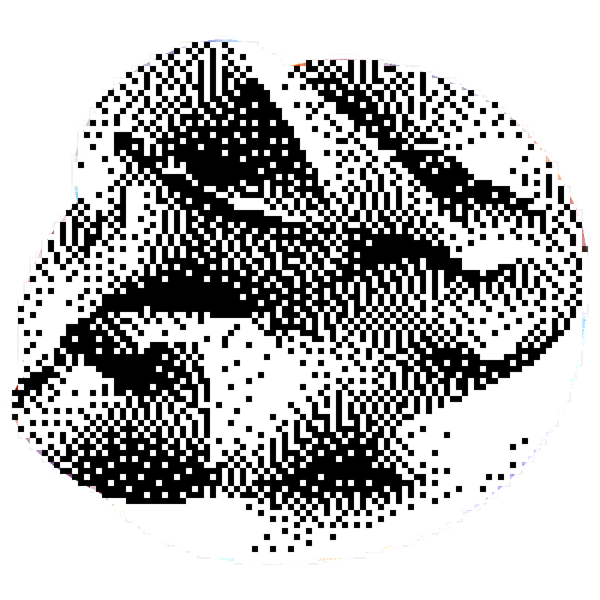

Research Report

It seems we'll need to reach a layer deeper! Let's go now, our current instruments do not suffice. Just hit that button and we'll recurse ourselves.
It seems we'll need to reach a layer deeper! Let's go now, our current instruments do not suffice. Just hit that button and we'll recurse ourselves.